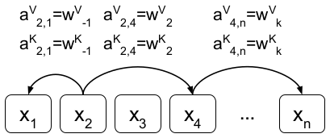

Transformer 完全依赖注意力机制，在机器翻译上取得了最先进结果（Vaswani et al., 2017）。与循环神经网络和卷积神经网络不同，它在结构中并不显式建模相对或绝对位置信息，而是需要向输入添加绝对位置表示。在这项工作中，我们提出一种替代方法：扩展自注意力机制，使其能够高效考虑序列元素之间相对位置（或距离）的表示。在 WMT 2014 英德和英法翻译任务上，该方法相对于绝对位置表示分别带来 1.3 BLEU 和 0.3 BLEU 的提升。值得注意的是，我们观察到将相对位置表示与绝对位置表示结合，并不会进一步提升翻译质量。我们描述了该方法的一种高效实现，并将其表述为关系感知自注意力机制的一个实例；该机制可以推广到任意带标签的图输入。
最近的序列到序列学习方法通常利用循环（Sutskever et al., 2014）、卷积（Gehring et al., 2017; Kalchbrenner et al., 2016）、注意力（Vaswani et al., 2017），或循环与注意力的组合（Bahdanau et al., 2014; Cho et al., 2014; Luong et al., 2015; Wu et al., 2016）作为基本构建块。这些方法以不同方式纳入元素序列位置的信息。
循环神经网络（RNN）通常将隐藏状态 \(h_t\) 计算为时刻 \(t\) 输入与前一隐藏状态 \(h_{t-1}\) 的函数，通过其顺序结构直接捕获沿时间维度的相对和绝对位置。非循环模型不一定按顺序考虑输入元素，因此可能需要显式编码位置信息才能利用序列顺序。
一种常见方法是将位置编码与输入元素结合，从而向模型暴露位置信息。这些位置编码可以是位置的确定性函数（Sukhbaatar et al., 2015; Vaswani et al., 2017），也可以是学习到的表示。卷积神经网络在每个卷积的核大小内天然捕获相对位置。然而，已有研究表明它们仍能从位置编码中受益（Gehring et al., 2017）。
对于既不使用卷积也不使用循环的 Transformer 而言，纳入显式位置信息表示是一个尤其重要的考虑，因为否则模型将完全对序列顺序不变。因此，基于注意力的模型此前使用了位置编码或基于距离的注意力权重偏置（Parikh et al., 2016）。
在这项工作中，我们提出一种高效方式，在 Transformer 的自注意力机制中纳入相对位置表示。即使完全替换其绝对位置编码，我们也在两个机器翻译任务上展示了翻译质量的显著提升。
我们的方法可以表述为将 Transformer 自注意力机制扩展到考虑输入中任意两个元素之间任意关系的一个特例；我们计划在未来工作中探索这一方向，用于建模带标签的有向图。
Transformer（Vaswani et al., 2017）采用编码器—解码器结构，由堆叠的编码器层和解码器层组成。编码器层包含两个子层：自注意力，随后是逐位置前馈层。解码器层包含三个子层：自注意力，随后是编码器—解码器注意力，再随后是逐位置前馈层。它在每个子层周围使用残差连接，然后进行层归一化（Ba et al., 2016）。解码器在其自注意力中使用掩蔽，以防止给定输出位置在训练期间纳入未来输出位置的信息。
基于不同频率正弦波的位置编码在第一层之前被加到编码器和解码器输入元素上。与学习到的绝对位置表示不同，作者假设正弦位置编码能够帮助模型泛化到训练中未见过的序列长度，因为它允许模型学习也按相对位置进行注意力。我们的相对位置表示也具有这一性质；与绝对位置表示不同，相对位置表示对总序列长度不变。
残差连接有助于将位置信息传播到更高层。
自注意力子层采用 \(h\) 个注意力头。为形成子层输出，每个头的结果被拼接，并应用参数化线性变换。
每个注意力头作用于长度为 \(n\) 的输入序列 \(x=(x_1,\ldots,x_n)\)，其中 \(x_i\in\mathbb{R}^{d_x}\)，并计算相同长度的新序列 \(z=(z_1,\ldots,z_n)\)，其中 \(z_i\in\mathbb{R}^{d_z}\)。
每个输出元素 \(z_i\) 计算为线性变换后输入元素的加权和：
每个权重系数 \(\alpha_{ij}\) 使用 softmax 函数计算：
而 \(e_{ij}\) 使用比较两个输入元素的兼容性函数计算：
兼容性函数选择缩放点积，因为它能够高效计算。输入的线性变换增加了足够的表达力。
\(W^Q,W^K,W^V\in\mathbb{R}^{d_x\times d_z}\) 是参数矩阵。这些参数矩阵在每一层和每个注意力头中都是独立的。
我们提出一种自注意力扩展，以考虑输入元素之间的成对关系。在这个意义上，我们将输入建模为一个带标签、有向、全连接的图。
输入元素 \(x_i\) 与 \(x_j\) 之间的边由向量 \(a_{ij}^V,a_{ij}^K\in\mathbb{R}^{d_a}\) 表示。学习两种不同边表示的动机是：\(a_{ij}^V\) 和 \(a_{ij}^K\) 分别适合用于式（3）和式（4），而不需要额外的线性变换。这些表示可以在注意力头之间共享。我们使用 \(d_a=d_z\)。
我们修改式（1），将边信息传播到子层输出：
对于“给定注意力头所选择的边类型信息对下游编码器或解码器层有用”的任务而言，这一扩展可能很重要。然而，如 4.3 节所探索的，对于机器翻译这可能并非必要。
重要的是，我们还修改式（2），在确定兼容性时考虑边：
在式（3）和式（4）中使用简单加法纳入边表示的主要动机，是为了支持 3.3 节描述的高效实现。

对于线性序列，边可以捕获输入元素之间相对位置差异的信息。我们考虑的最大相对位置被裁剪到最大绝对值 \(k\)。我们假设超过一定距离的精确相对位置信息不再有用。裁剪最大距离还使模型能够泛化到训练中未见过的序列长度。因此，我们考虑 \(2k+1\) 个唯一边标签。
然后我们学习相对位置表示 \(w^K=(w_{-k}^K,\ldots,w_k^K)\) 和 \(w^V=(w_{-k}^V,\ldots,w_k^V)\)，其中 \(w_i^K,w_i^V\in\mathbb{R}^{d_a}\)。
如 Veličković et al. (2017) 在考虑注意力模型的未标注图输入时所指出的，考虑输入元素之间的边时存在实际的空间复杂度问题。
对于长度为 \(n\) 的序列和 \(h\) 个注意力头，我们通过在多个头之间共享相对位置表示，将存储相对位置表示的空间复杂度从 \(O(hn^2d_a)\) 降低到 \(O(n^2d_a)\)。此外，相对位置表示可以跨序列共享。因此，整体自注意力空间复杂度从 \(O(bhnd_z)\) 增加到 \(O(bhnd_z+n^2d_a)\)。给定 \(d_a=d_z\)，相对增加量取决于 \(\frac{n}{bh}\)。
Transformer 使用并行矩阵乘法操作，为一个批次中的所有序列、头和位置高效计算自注意力（Vaswani et al., 2017）。在没有相对位置表示时，每个 \(e_{ij}\) 可以通过 \(bh\) 次并行的 \(n\times d_z\) 与 \(d_z\times n\) 矩阵乘法计算。每次矩阵乘法为特定头和序列计算所有序列位置的 \(e_{ij}\)。对于任意序列和头，这要求在与其它位置的所有兼容性函数应用（点积）中共享每个位置的相同表示。
当我们考虑相对位置时，表示会因不同位置对而不同。这阻止我们在单次矩阵乘法中为所有位置对计算所有 \(e_{ij}\)。我们还希望避免广播相对位置表示。然而，这两个问题都可以通过将式（4）的计算拆分为两项来解决：
第一项与式（2）相同，可按上述方式计算。对于涉及相对位置表示的第二项，可以使用张量重塑来计算 \(n\) 次并行的 \(bh\times d_z\) 与 \(d_z\times n\) 矩阵乘法。每次矩阵乘法为所有头和批次计算对 \(e_{ij}\) 的贡献，对应特定序列位置。进一步重塑允许将两项相加。相同方法可用于高效计算式（3）。
对于我们的机器翻译实验，结果是每秒步数适度下降 7%，但我们能够在 P100 GPU 上保持与 Vaswani et al. (2017) 相同的模型和批量大小。
我们使用 tensor2tensor 库训练和评估模型。
我们在 WMT 2014 机器翻译任务上评估模型，使用由约 450 万句对组成的 WMT 2014 英德数据集，以及由约 3600 万句对组成的 WMT 2014 英法数据集。
所有实验中，我们将标记切分为 32,768 个 word-piece 词表（Wu et al., 2016）。我们按近似长度对句子对分批，并将每块 GPU 每批的输入和输出标记限制为 4096。每个所得训练批次约包含 25,000 个源标记和 25,000 个目标标记。
我们使用 Adam 优化器（Kingma and Ba, 2014），\(\beta_1=0.9\)、\(\beta_2=0.98\)、\(\epsilon=10^{-9}\)。我们使用与 Vaswani et al. (2017) 相同的学习率预热和衰减策略，预热步数为 4,000。训练期间采用值 \(\epsilon_{ls}=0.1\) 的标签平滑（Szegedy et al., 2016）。评估时使用束大小 4、长度惩罚 \(\alpha=0.6\) 的束搜索（Wu et al., 2016）。
对于 base 模型，我们使用 6 个编码器和解码器层，\(d_x=512\)、\(d_z=64\)、8 个注意力头、1024 个前馈内层维度，以及 \(P_{dropout}=0.1\)。使用相对位置编码时，我们使用裁剪距离 \(k=16\)，并为每层和每个头使用唯一边表示。我们在 8 块 K40 GPU 上训练 100,000 步，不使用检查点平均。
对于 big 模型，我们使用 6 个编码器和解码器层，\(d_x=1024\)、\(d_z=64\)、16 个注意力头、4096 个前馈内层维度；英德使用 \(P_{dropout}=0.3\)，英法使用 \(P_{dropout}=0.1\)。使用相对位置编码时，我们使用 \(k=8\)，并为每层使用唯一边表示。我们在 8 块 P100 GPU 上训练 300,000 步，并对最后 20 个检查点（每 10 分钟保存）取平均。
我们将仅使用相对位置表示的模型与使用正弦位置编码的基线 Transformer（Vaswani et al., 2017）进行比较。我们生成基线结果，以将相对位置表示的影响与对底层库和实验配置的任何其他更改隔离开来。
对于英德，我们的方法在 base 和 big 配置上分别比基线提升 0.3 和 1.3 BLEU。对于英法，在 base 和 big 配置上分别提升 0.5 和 0.3 BLEU。在我们的实验中，没有观察到在相对位置表示之外再加入正弦位置编码带来任何额外收益。结果见表 1。
| 模型 | 位置信息 | EN-DE BLEU | EN-FR BLEU |
|---|---|---|---|
| Transformer (base) | 绝对位置（正弦） | 26.5 | 38.2 |
| Transformer (base) | 相对位置表示 | 26.8 | 38.7 |
| Transformer (big) | 绝对位置（正弦） | 27.9 | 41.2 |
| Transformer (big) | 相对位置表示 | 29.2 | 41.5 |
我们进行了若干实验，修改模型的不同方面。本节所有实验均使用 base 模型配置，不使用任何绝对位置表示。BLEU 分数在 WMT 英德任务的开发集 newstest2013 上计算。
我们评估了改变最大绝对相对位置差的裁剪距离 \(k\) 的影响。值得注意的是，对于 \(k\ge2\)，BLEU 分数似乎没有太大变化。然而，由于我们使用多个编码器层，精确的相对位置信息可能能够传播到裁剪距离之外。结果见表 2。
| \(k\) | EN-DE BLEU |
|---|---|
| 0 | 12.5 |
| 1 | 25.5 |
| 2 | 25.8 |
| 4 | 25.9 |
| 16 | 25.8 |
| 64 | 25.9 |
| 256 | 25.8 |
我们还评估了消融 3.1 节定义的两个相对位置表示（式 3 中的 \(a_{ij}^V\) 和式 4 中的 \(a_{ij}^K\)）各自的影响。仅在确定元素间兼容性时纳入相对位置表示可能就足够了，但还需要进一步工作来确定这对其他任务是否成立。结果见表 3。
| \(a_{ij}^V\) | \(a_{ij}^K\) | EN-DE BLEU |
|---|---|---|
| 是 | 是 | 25.8 |
| 否 | 是 | 25.8 |
| 是 | 否 | 25.3 |
| 否 | 否 | 12.5 |
在本文中，我们提出一种自注意力扩展，可用于为序列纳入相对位置信息，并改善机器翻译性能。
对于未来工作，我们计划将该机制扩展到考虑 Transformer 的任意有向、带标签图输入。我们还对结合输入表示和边表示的非线性兼容性函数感兴趣。对于这两种扩展，一个关键考虑将是确定高效实现。
Jimmy Lei Ba, Jamie Ryan Kiros, and Geoffrey E Hinton. 2016. Layer normalization. arXiv preprint arXiv:1607.06450.
Dzmitry Bahdanau, Kyunghyun Cho, and Yoshua Bengio. 2014. Neural machine translation by jointly learning to align and translate. arXiv preprint arXiv:1409.0473.
Kyunghyun Cho, Bart Van Merrienboer, Caglar Gulcehre, Dzmitry Bahdanau, Fethi Bougares, Holger Schwenk, and Yoshua Bengio. 2014. Learning phrase representations using rnn encoder-decoder for statistical machine translation. arXiv preprint arXiv:1406.1078.
Jonas Gehring, Michael Auli, David Grangier, Denis Yarats, and Yann N Dauphin. 2017. Convolutional sequence to sequence learning. arXiv preprint arXiv:1705.03122.
Nal Kalchbrenner, Lasse Espeholt, Karen Simonyan, Aaron van den Oord, Alex Graves, and Koray Kavukcuoglu. 2016. Neural machine translation in linear time. arXiv preprint arXiv:1610.10099.
Diederik Kingma and Jimmy Ba. 2014. Adam: A method for stochastic optimization. arXiv preprint arXiv:1412.6980.
Minh-Thang Luong, Hieu Pham, and Christopher D Manning. 2015. Effective approaches to attention-based neural machine translation. arXiv preprint arXiv:1508.04025.
Ankur P Parikh, Oscar Tackström, Dipanjan Das, and Jakob Uszkoreit. 2016. A decomposable attention model for natural language inference. In Empirical Methods in Natural Language Processing.
Sainbayar Sukhbaatar, Jason Weston, Rob Fergus, et al. 2015. End-to-end memory networks. In Advances in neural information processing systems, pages 2440–2448.
Ilya Sutskever, Oriol Vinyals, and Quoc V Le. 2014. Sequence to sequence learning with neural networks. In Advances in neural information processing systems, pages 3104–3112.
Christian Szegedy, Vincent Vanhoucke, Sergey Ioffe, Jon Shlens, and Zbigniew Wojna. 2016. Rethinking the inception architecture for computer vision. In Proceedings of the IEEE Conference on Computer Vision and Pattern Recognition, pages 2818–2826.
Ashish Vaswani, Noam Shazeer, Niki Parmar, Jakob Uszkoreit, Llion Jones, Aidan N Gomez, Lukasz Kaiser, and Illia Polosukhin. 2017. Attention is all you need. In Advances in Neural Information Processing Systems, pages 6000–6010.
Petar Velickovic, Guillem Cucurull, Arantxa Casanova, Adriana Romero, Pietro Lio, and Yoshua Bengio. 2017. Graph attention networks. arXiv preprint arXiv:1710.10903.
Yonghui Wu, Mike Schuster, Zhifeng Chen, Quoc V Le, Mohammad Norouzi, Wolfgang Macherey, Maxim Krikun, Yuan Cao, Qin Gao, Klaus Macherey, et al. 2016. Google’s neural machine translation system: Bridging the gap between human and machine translation. arXiv preprint arXiv:1609.08144.
说明：本文档为所提供 PDF 内容的中文翻译版；参考文献保留英文原样。原文图已按英文本裁切嵌入。表 1、表 2 已按英文本补全数值。